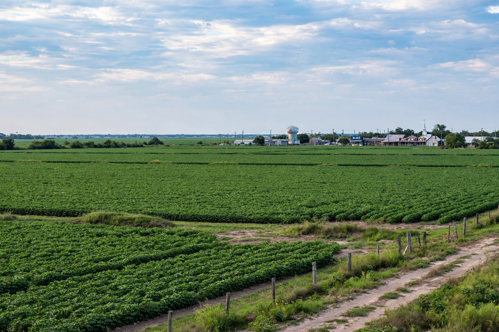

| Mississippi Delta | |
|---|---|
 | |
| Location | Northwestern Mississippi, United States |
| Boundaries | Memphis (north) to Vicksburg (south); Mississippi River (west) to the Yazoo River / bluff hills (east) |
| Principal towns | Clarksdale, Greenville, Greenwood, Yazoo City, Indianola |
| Known for | Cotton agriculture; birthplace of Delta blues |
The Mississippi Delta, also known as the Yazoo–Mississippi Delta, is the distinctive northwestern section of the US state of Mississippi (and small parts of Arkansas and Louisiana), lying between the Mississippi and Yazoo rivers. Despite the name, it is an alluvial floodplain rather than the river delta proper, which lies far to the south in Louisiana. Writer David Cohn famously said the Delta "begins in the lobby of the Peabody Hotel in Memphis and ends on Catfish Row in Vicksburg."
The region is a flat plain of exceptionally fertile soil deposited by millennia of flooding, roughly 200 miles (320 km) long and up to 87 miles (140 km) wide. Cleared of its hardwood forests and swamps in the 19th century, it became one of the world's great cotton-producing regions, worked first by enslaved people and later by sharecroppers and tenant farmers. The Great Mississippi Flood of 1927 devastated the region. Mechanisation after the Second World War reduced the need for labour and drove much of the Great Migration of African Americans to northern cities.
The Delta is the birthplace of the Delta blues, home to musicians including Charley Patton, Robert Johnson, Son House, Muddy Waters, Howlin' Wolf, and B. B. King (from nearby Berclair and Indianola). Its musical heritage, foodways (including the hot tamale), and literature — the region produced writers such as Walker Percy and Shelby Foote — give it an outsized cultural significance despite chronic poverty, which has made it a focus of civil-rights history, including the murder of Emmett Till in Money, Mississippi, in 1955.
See also: Delta blues; Yazoo River; Great Mississippi Flood of 1927; Sharecropping; Clarksdale, Mississippi.